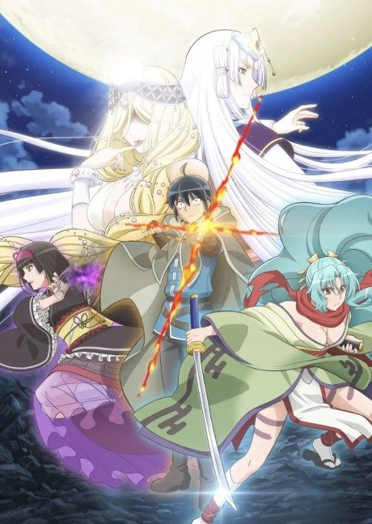
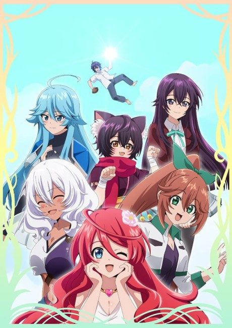

In Another World With My Smartphone
異世界はスマートフォンとともに。
The anime takes the story to Not checked.
5.7AniList score
—Animeter, no votes yet
24episodes, 2 seasons
2 seasons, 24 episodes
In airing order. Episode numbers on this site count straight through every season, so season 2 starts at episode 13.
1
2017 · TV
In Another World With My Smartphone
Episodes1–1212 ep
2
2023 · TV
In Another World With My Smartphone 2
Episodes13–2412 ep
Sources: AniList
More like In Another World With My Smartphone
 Manga Vol. 157.6
Manga Vol. 157.6

Manga Vol. 117.7
Not checked6.9
Seirei Gensouki: Spirit Chronicles Manga Ch. 347.6
Manga Ch. 347.6

Not checked5.9 Not checked6.9
Not checked6.9